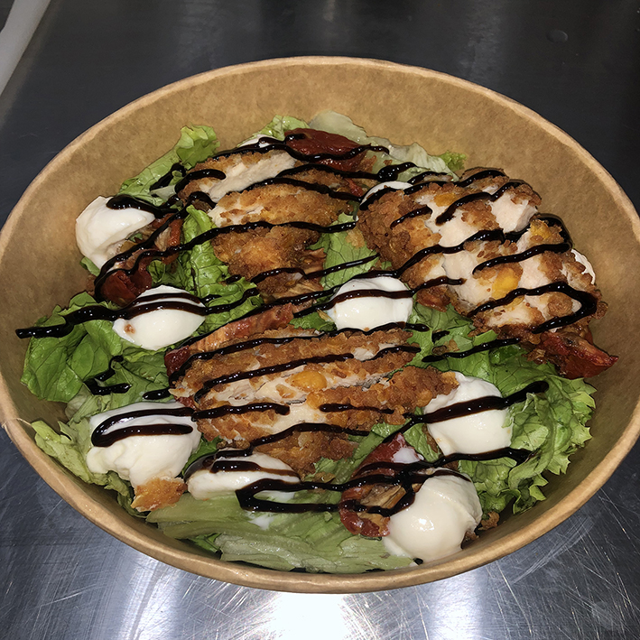

Salade Caesar
Ingrédients
- Salade
- Oignons Frits
- Tomates séchées
- Tenders de poulets
- Billes de mozza
- Vinaigre Balsamique
Etapes
- Prendre une assiette
- Déposer la salade et saupoudrer les oignons frits par dessus
- Découper des bouts de billes de mozzarella et de tomates confites et les déposer délicatement sur le dessus
- Après les avoir fait frire pendant 4 minutes à la friteuse, découper les tenders en petits morceaux et éparpillez-les
- Mettez quelques traits de crème balsamique
- Il n'y a plus qu'à déguster ! Bon appétit :)

Tarte à l'ananas
Ingrédients
- Pâte Feuilleté
- Crème Fraiche
- Lardons
- Ananas
- Emmental râpé
- Miel
Etapes
- Déroulez la pâte sur un plat à tarte
- Faire de légers trous dans la pâte à l'aide d'une fourchette
- Etalez la crème fraiche sur la pâte
- Déposer les lardons et les ananas équitablement sur la pâte remplie de crème
- Disposer l'emmental râpé sur le dessus de votre pâte
- Enfournez dans un four préchauffé à 200*C
- Laissez-la 20min, quand l'emmental est doré, sortez la pizza
- Mettre quelques filets de miel
- Si vous souhaitez vous pouvez remplacer les lardons par du poulet ou du saumon
- Il n'y a plus qu'à déguster ! Bon appétit :)